| Item | Value |
|---|---|
| Assigned domain | Open-source package vulnerabilities |
PORT_BASE | 8744 = 8000 + (8844 mod 900) |
PREFIX | s8844 |
SEED / VERIFY_SEED | 8844 / 268844 |
DOMAIN_ID | 4 = 8844 mod 8 |
| Kafka | apache/kafka:3.9.2, isolated project data260-hw8 |
| Listeners | Docker: hw08-kafka:9092; host: localhost:29092 |
| Runtime | Windows host, Docker Desktop, Linux x86_64 containers, 12 CPUs, WSL2 |
| Model/database | Configured model qwen3:8b and database s8844_rel; measured HW8 agent behavior was deterministic and did not use Ollama or MySQL. |
The host client and isolated FastAPI service publish canonical requests to s8844_entity_requests. The entity worker validates the vulnerability-report payload, stores entities in a worker-local Python dictionary, generates UUIDs for CREATE_ENTITY, and publishes responses to s8844_entity_responses. The client waits only for the matching correlation_id and does not automatically retry.
| Envelope field | Request/response use |
|---|---|
message_type | entity_request or entity_response |
correlation_id | Preserved unchanged from request to response |
reply_to | s8844_entity_responses on requests |
operation | CREATE_ENTITY, GET_ENTITY, or an intentional invalid operation |
data | Vulnerability-report fields or returned entity/error data |
entity_id | Generated UUID for CREATE; lookup ID for GET |
attempt, timestamp, metadata | Bounded processing metadata and observable timestamps |
Validation requires non-empty package name, vulnerability ID, submitter email, and description; valid email syntax; a 26-character minimum description; one of Critical/High/Medium/Low severity; termsAccepted=true; and a non-negative integer version count.
homework_demo.py ran against the captured FastAPI service at http://127.0.0.1:8744. CREATE correlation was hw8-8844-live2-create-001; GET correlation was hw8-8844-live2-get-001; generated UUID was 4e9d8b15-a4de-415c-82f0-e5f67123d12d. The entity contained package requests, vulnerability CVE-2026-0001, severity High, submitter student@example.com, two affected versions, accepted terms, and the recorded description. Validation failure, unknown entity, and unknown operation responses each echoed their correlation ID.
The captured service log contains FastAPI server started at http://127.0.0.1:8744 and Consumer is ready and listening on s8844_entity_requests. The Docker snapshot shows Kafka, the entity worker, and the FastAPI service. Topic commands show the exact request/response names.
Evidence: raw/part1_homework_demo_live2.jsonl, raw/part1_service_logs.log, raw/part1_docker_ps.txt, raw/part1_topic_commands.log.
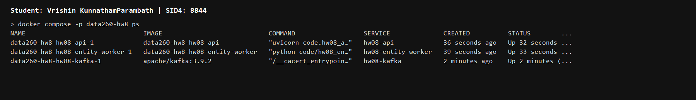
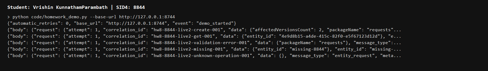
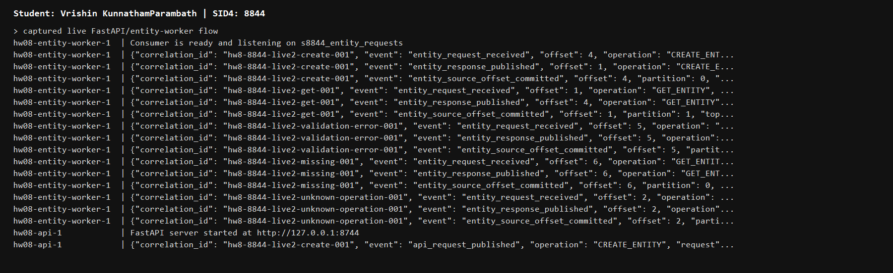
| Process | Input | Output |
|---|---|---|
| Planner | s8844_inbox | s8844_tasks |
| Writer | s8844_tasks | s8844_drafts |
| Reviewer | s8844_drafts | s8844_final |
The corrected live run published one input with correlation ID hw8-8844-agent-live2-001. It was observed at s8844_inbox p0/o0, s8844_tasks p1/o0, s8844_drafts p1/o0, and s8844_final p1/o0. The final JSON message contained status=approved and an answer. The complete stage log shows each process receiving, publishing, and committing.
Kafka helped coordinate the agents by providing durable topic boundaries, consumer-group assignment, explicit offsets, and independent restart/failure domains. Each process can be observed and scaled separately, while the correlation ID connects the journey without a shared in-process call stack.
Topic verification recorded s8844_inbox, s8844_tasks with exactly two partitions, s8844_drafts, and s8844_final. No Ollama, MySQL, or JMeter call was made.
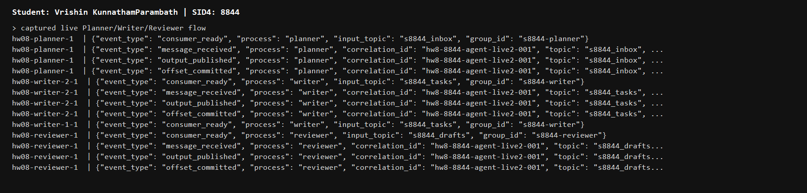
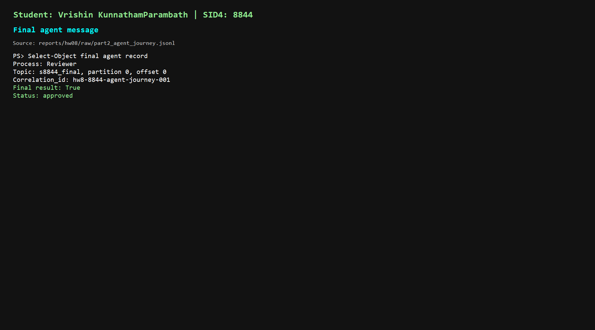
| Experiment | Measured result |
|---|---|
| Duplicate delivery | Intentional replay returned the same UUID; duplicate flag was true; derived entity-store count stayed 0 -> 1 -> 1. |
| Consumer death | Writer 1 crashed before commit; the same p0/o0 was redelivered to Writer 2, which published and committed. Writer 1 restart readiness was logged. No exit code is claimed for the corrected run because it was not captured before recreation. |
| Poison/DLT | Attempts 1-3 were bounded; DLT publication to s8844_dead_letter preceded source commit; a later valid message reached s8844_drafts with blocked_by_poison=false. |
def idempotency_key(message):
data = message.get("data")
data_entity_id = data.get("entity_id") if isinstance(data, Mapping) else None
return (str(message.get("message_type", "")),
str(message.get("correlation_id", "")),
str(message.get("operation", "")),
str(message.get("entity_id") or data_entity_id or ""))
await producer.send_and_wait(response_topic, serialize_message(response)) await consumer.commit() # commit only after successful output
failures = poison_attempt_records(message, error_type=error_type, max_attempts=3)
dead_letter = dead_letter_message(message, error_type=error_type, ...)
await producer.send_and_wait("s8844_dead_letter", serialize_message(dead_letter))
await consumer.commit()
# ordering harness
key = "entity-268844" if keyed else None
await producer.send_and_wait("s8844_tasks", value, key=key)
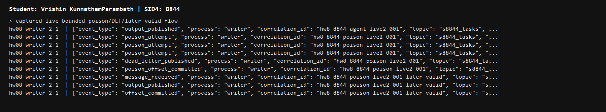
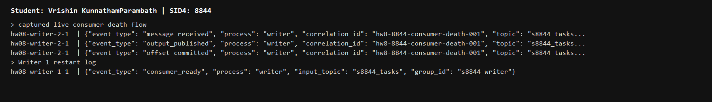
No historical before-fix run was captured for duplicate, consumer death, or poison handling. The table therefore does not invent measured before values; it records the actual measured after behavior and identifies the evidence boundary.
| Case | Before-fix evidence | After HW8 mechanism | Evidence |
|---|---|---|---|
| Duplicate delivery | No historical before-fix run captured. | Cached response, same UUID, unchanged count. | part3_duplicate_delivery.jsonl |
| Consumer death | No historical before-fix run captured. | Crash before commit, Kafka redelivery, output then commit. | part3_consumer_death_live2.jsonl plus logs |
| Poison message | No historical before-fix run captured. | Three bounded attempts, DLT publication, source commit, later valid output. | part3_poison_dead_letter_live2.jsonl |
| Ordering | In-process graph has no Kafka partition measurement. | Unkeyed and entity-keyed 20-message runs measured per-partition order. | Four ordering JSONL/CSV files |
VERIFY_SEED=268844, exactly 20 related messages per run, two partitions, and two Writers in group s8844-writer were used. Unkeyed messages used no key. Keyed messages used entity-268844. No retry or resend occurred.
| Run | Measured result | Interpretation |
|---|---|---|
| Unkeyed | 20/20; partitions 0 and 1; both Writers. By offset: p0 [0,3,4,6,7,9,10,11,12,15,17,18,19]; p1 [1,2,5,8,13,14,16]. | Each partition preserved its measured sequence; no global ordering claim. |
| Entity-keyed | 20/20; all p0; Writer 1; sequence and offsets both 0 through 19. | One deterministic key colocated related messages in one partition. |
Kafka guarantees ordering within a partition, not global ordering across partitions.
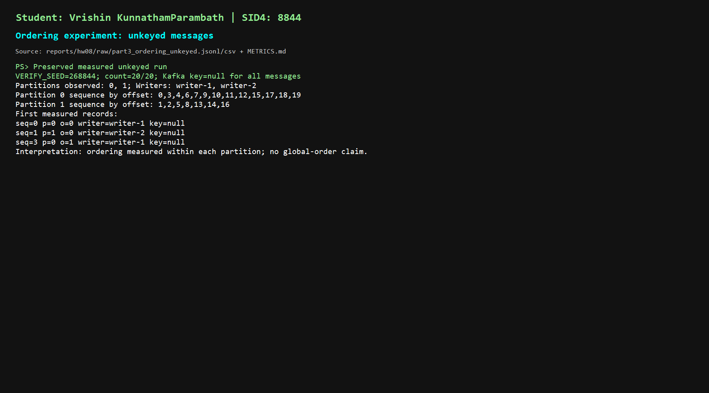
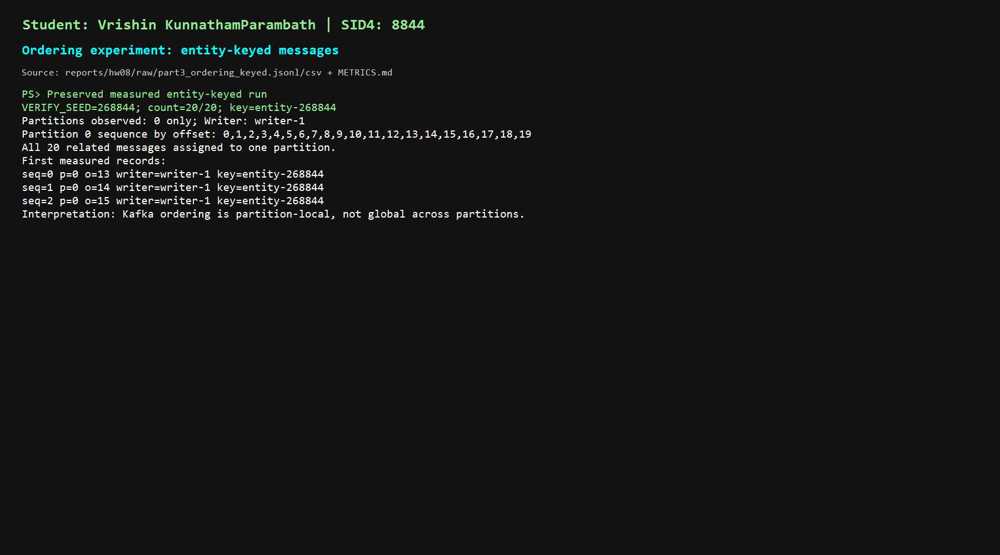
| Required item | Result |
|---|---|
| Benefit 1 - independent scaling | Planner, Writer, and Reviewer are separate consumers and can scale or restart independently through Kafka groups. |
| Benefit 2 - decoupled failure | A Writer crash before commit does not lose the task; Kafka redelivers it to a surviving Writer and topic boundaries isolate stages. |
| Responsibility 1 - idempotency and DLT | The application must handle duplicate delivery, bound poison attempts, publish the DLT, and commit only after output/DLT success. |
| Responsibility 2 - ordering and operations | The application must choose keys, understand partition-local ordering, manage listeners/topics/groups, and verify readiness and cleanup. |
verification.json records homework number, SID4, the HW8 artifact commit hash, model/configuration, PORT_BASE, PREFIX, DOMAIN_ID, SEED, VERIFY_SEED, named checks, and pass/fail values. The final hw8 tag is created on the packaging metadata commit.
| Requirement | Evidence |
|---|---|
| Entity/API | part1_homework_demo_live2.jsonl, service logs, Docker snapshot, topic commands |
| Agent journey | part2_agent_demo_live2.jsonl, full pipeline logs, topic commands |
| Duplicate delivery | part3_duplicate_delivery.jsonl |
| Consumer death | part3_consumer_death_live2.jsonl, writer and restart logs |
| Poison/DLT | part3_poison_dead_letter_live2.jsonl, writer/topic logs |
| Ordering | Four ordering JSONL/CSV files |
| Offline verification | python -m unittest test_hw08_offline -v and verification.json |
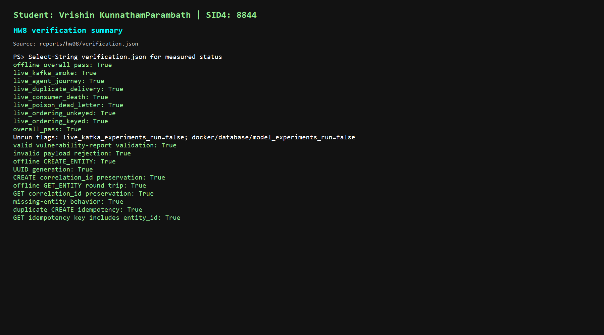
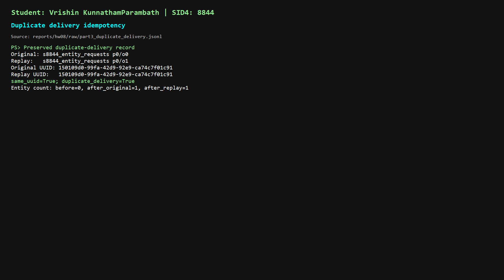
1. Use: I used AI/Codex for inspection, implementation support, tests, controlled local Kafka commands, evidence organization, screenshots, and report/PDF preparation. I selected data and scope, reviewed results, and made final decisions.
2. Incorrect output/verification: The first hand-built PDF opened blank. I independently verified rendering, the %PDF- header, searchable text, raw evidence, logs, tests, and links.
3. Detection: The blank PDF contradicted the expected report content. Comparing poison logs also showed that the later-valid check needed an explicit run.
4. Correction: Chrome headless rendering replaced the blank output; the FastAPI/demo, full stage logs, post-DLT check, and normalized consumer-death evidence were added; the verifier now checks the corrected evidence paths.
No hidden chain-of-thought, credentials, JWTs, hashes, API keys, tokens, or .env values are included. Historical before-fix runs were not captured and are not presented as measured data.
Full disclosure: reports/hw08/AI_USE.md. Verification source: code/verify_hw08.py.